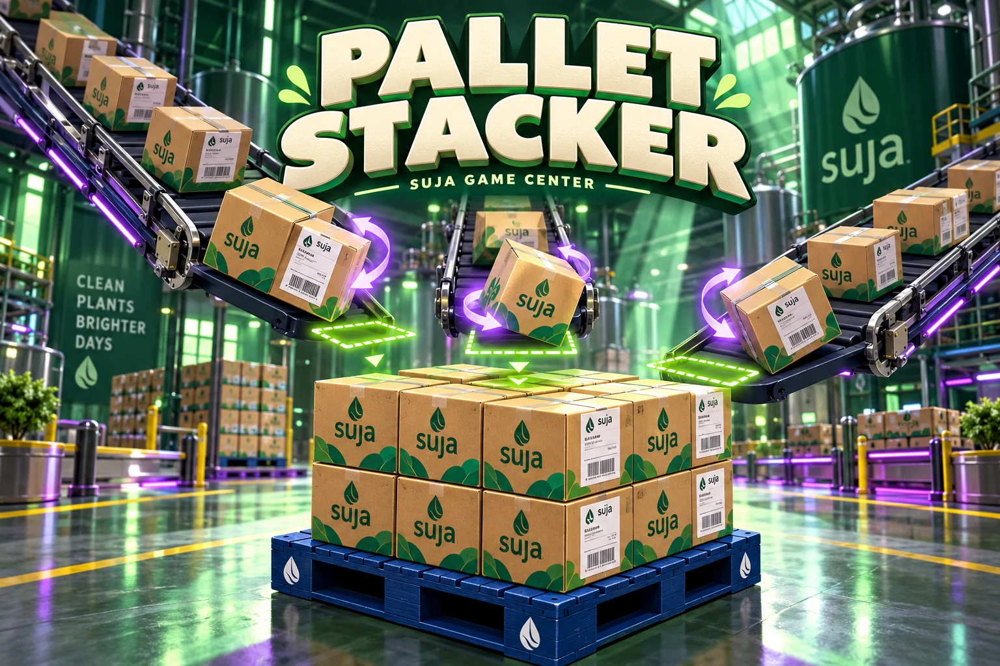

SUJA GAME CENTER / 02
A little precision. A little pressure. A whole lot of cases.
Compatibility graphics · 3D acceleration is unavailable. Reload to retry
Guest play · Sign in at Game Center to save crew scores.
Three pallets · Five layers each · Eight chances
Labels out. Let’s stack.
TAP A CASE TO TURN · OR TAP ITS LANE
YOUR FIRST PALLET
TAKE A BREATHER
SHIFT COMPLETE
PALLET STACKER